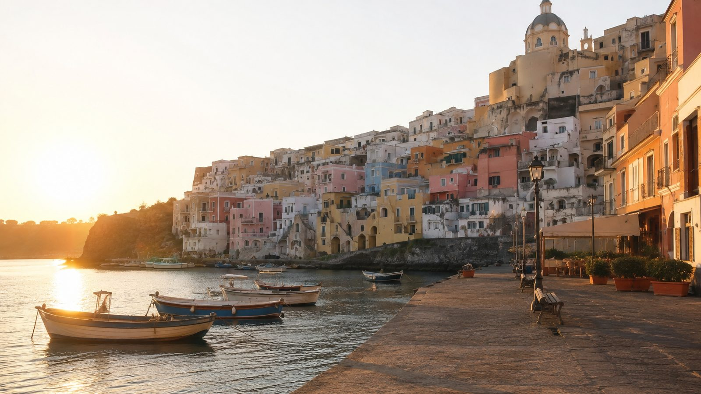
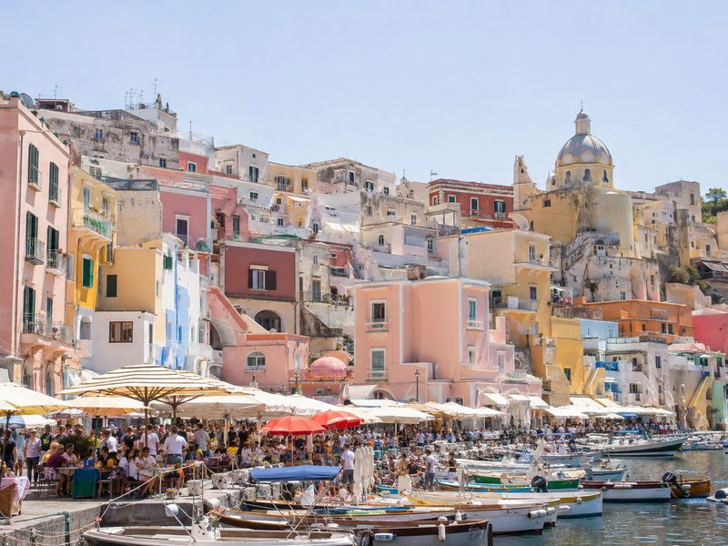
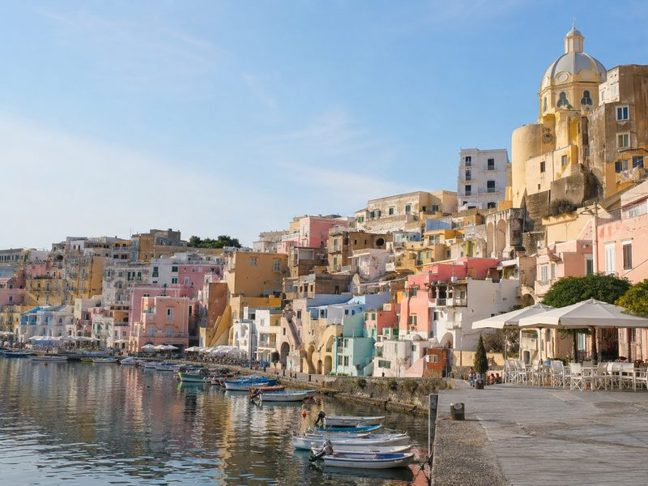
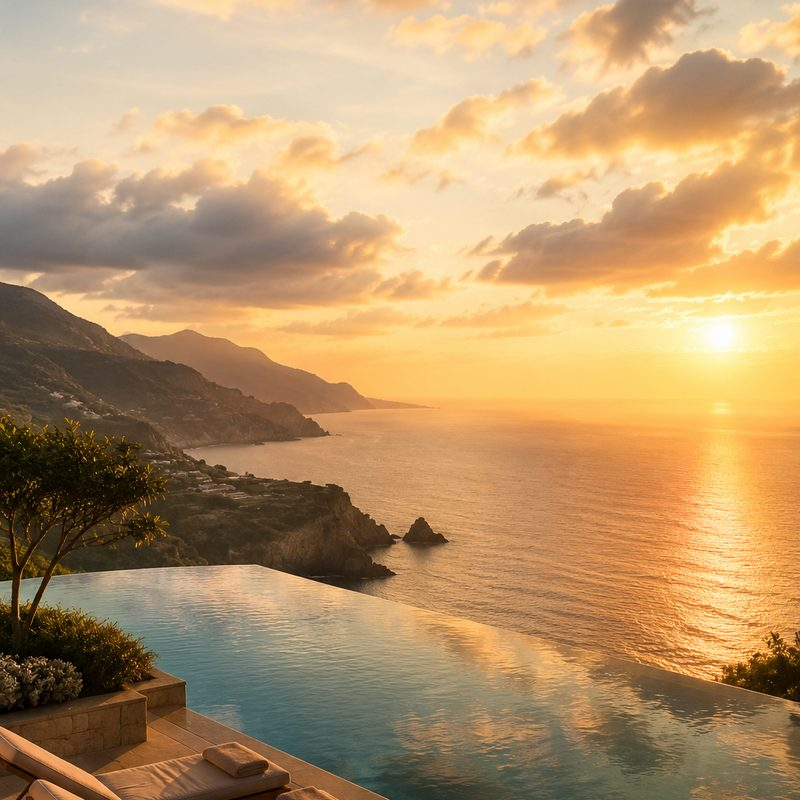
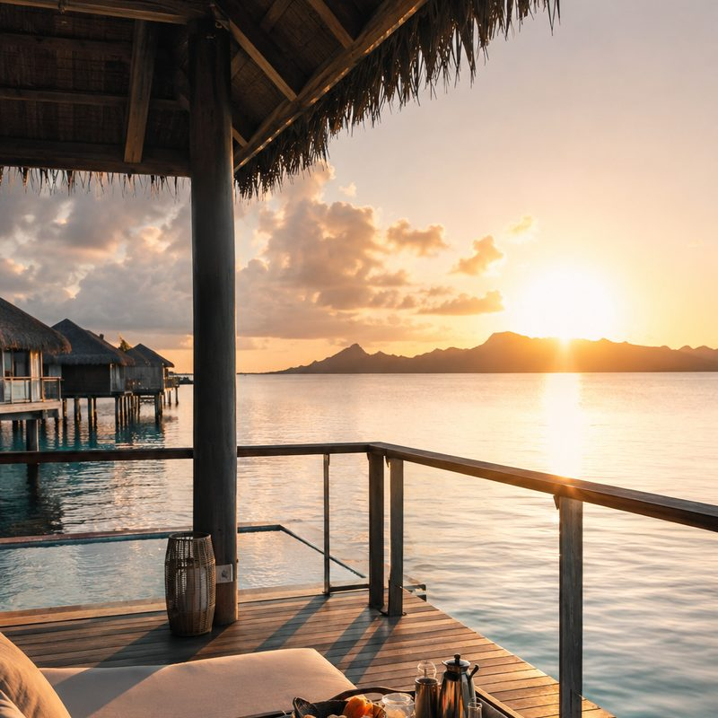
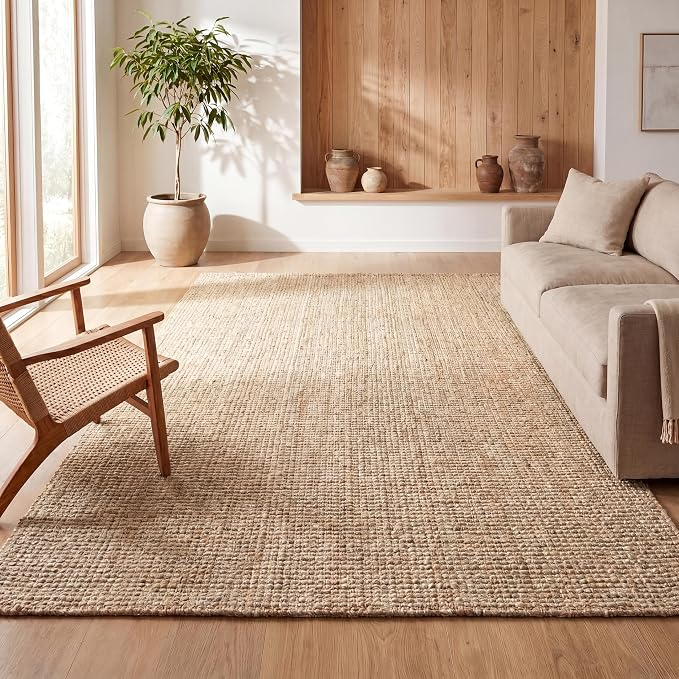
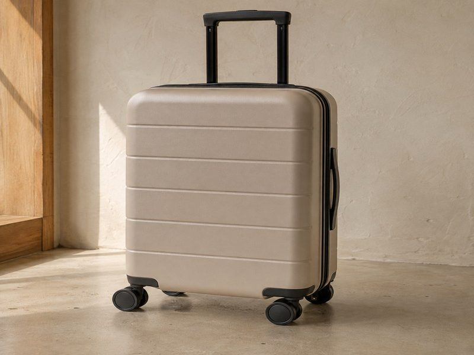

Most people book the same fortnight everyone else books, pay the highest price of the year for it, and spend the trip queueing. Move the same trip two weeks either side and almost nothing changes except the crowd and the bill.
As an Amazon Associate I earn from qualifying purchases. Links below are affiliate links (#ad) - they cost you nothing extra. Nothing here is a paid placement, and no brand sees this page before it goes up.
Between peak August and late September in southern Europe you are typically trading a few degrees of afternoon heat for a much emptier town. The sea is usually still warm - water holds heat longer than air, which is why September swimming is often better than June swimming.
What changes sharply is demand. Restaurants take walk-ins. The photo spot has nobody standing in it. And rooms that were sold out at full price two weeks earlier are suddenly negotiable.


Compare the total, not the room rate. Off-peak packages tend to fold in the airport transfer, breakfast, and a late checkout - things you would otherwise pay for separately, and which quietly add up to more than the room discount.
The other lever is length. Two nights somewhere you would never book for a week often costs less than upgrading a seven-night stay, and it is usually the part of the trip you remember.
Check what closes. Some seasonal restaurants, ferries and mountain lifts shut for the year in October. Look up the specific operator, not the destination in general.
Check the return date, not just the outbound. Shoulder pricing is asymmetric - flying out cheap and back at peak is a common trap.
Read the cancellation terms. Off-peak deals are often non-refundable. If your dates are not certain, the flexible rate can be worth the difference.
Book the winter trip in summer. Demand curves run months ahead. The cheapest time to book snow is usually while it is still hot.

Packages are where shoulder-season pricing shows up properly, because the transfers and breakfast get folded in rather than discounted separately. Filter by date first and destination second - that is the opposite of how most people search, and it is where the saving is.
Best for: trips where the dates are flexible and the destination is not
See current deals →paid link
The two-night add-on is the underrated move. Somewhere you would never book for a week is affordable for two nights off-peak, and it changes the shape of the whole trip. Check the transfer time before booking - two nights is not worth a four hour drive each way.
Best for: adding one memorable stop rather than upgrading the whole stay
See current deals →paid link
Shoulder season is the awkward packing problem: warm afternoons and cold evenings mean two wardrobes for one trip. Compression cubes are what make that fit in a cabin bag instead of a checked one. Pack by layer rather than by day and the evening things stay together.
Best for: trips where the temperature swings between afternoon and night
See it on Amazon →paid link
Off-peak flights are cheap until the checked bag is added, and the bag often costs more than the seat. Staying in cabin size is most of the saving. Check the airline's cabin limits before buying - they differ, and the strictest one on your itinerary is the one that counts.
Best for: cheap off-peak flights where the bag costs more than the seat
See it on Amazon →paid linkPick the dates before the destination. Shift the same trip two weeks and the town, the sea and the hotel are the same - only the crowd and the price move.
We look for pieces that change how a small room works, not the cheapest option and not the most photographed one. Everything here has to survive a rental: no drilling, no permanent fittings, nothing that needs a second person to install.
Room images on this site are our own illustrations, not photographs of the products. We link to the retailer so you can see the real item.
Written and selected by Rooms and Roads · Updated August 2026 · links checked August 2026